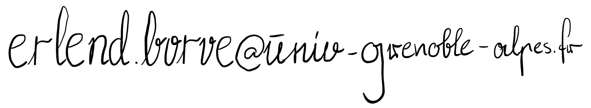

Erlend D. Børve
I am a postdoctoral researcher at Institut Fourier in Grenoble, France. My position is funded by CHARMS.
From June 2019 to June 2023, I was a PhD candidate at NTNU's Department of Mathematical Sciences, supervised by Aslak Buan. My PhD thesis is entitled Homotopical and geometric tools in representation theory.
My research interests include the representation theory of algebras, tilting theory and generalisations, and related areas.
Contact information
Address
Institut Fourier-UMR 5582,100 rue des mathématiques,
38610 Gières,
France,
Bureau: 101